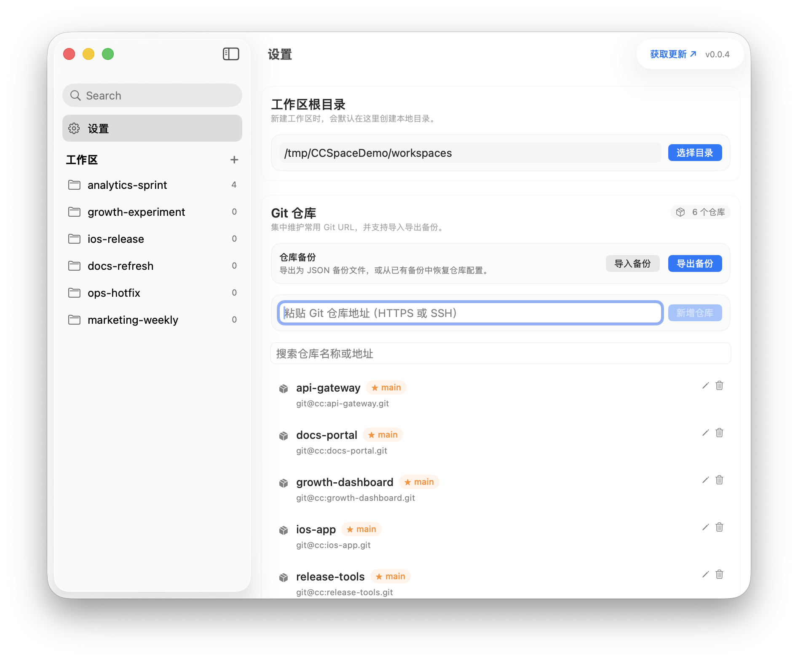
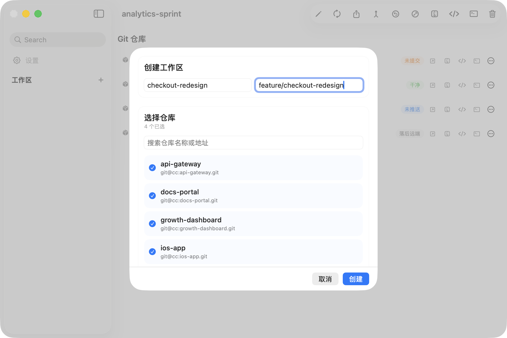
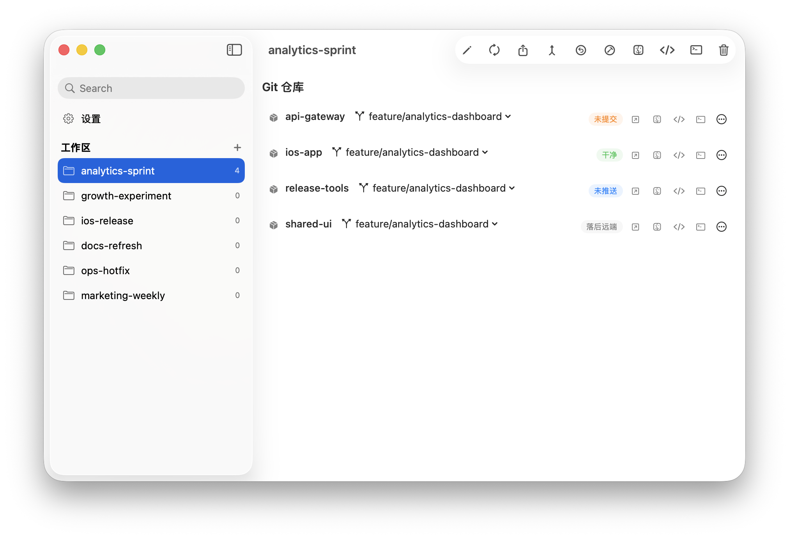

CCSpace
把常用 Git 仓库维护成仓库库，按当前任务自由组合成工作区。 从并行克隆、统一切分支，到批量同步、推送和状态巡检，都在一个桌面应用里完成。
仓库库配置
先把常用 Git 仓库维护进仓库库，后面建工作区时只需要勾选，不用每次重新找地址、填路径。

创建工作区
针对当前任务勾选需要的仓库，填写工作区名称和工作分支，然后并行克隆成一套完整环境。

工作区详情
所有仓库的当前分支、同步状态和批量操作都集中在一个视图里，适合开工前检查和收尾同步。

使用场景
适合需要同时维护多个 Git 仓库的一整套项目环境
新需求一键开工
前端、后端、网关、组件库一起选中，并行克隆成一个工作区，省去手工开多个终端。
统一切换分支
工作区下所有仓库按同一个工作分支切换，主分支合并、回到默认分支也能批量完成。
同步状态一屏看完
未提交、未推送、落后远端、未克隆等状态直接汇总出来，适合日常巡检和收尾同步。
核心能力
围绕多仓库工作流，把重复操作变成可复用动作
仓库库配置
先把常用 Git URL 维护进仓库库，自动解析仓库名，避免每次创建工作区都从头录入。
并行创建工作区
勾选仓库、填写工作区名和工作分支后，多个仓库会并行克隆到本地目录，建立速度更快。
统一状态面板
每个仓库的当前分支、默认分支、工作区状态和错误信息集中展示，问题仓库可以快速定位。
批量操作
同步全部、推送全部、合并默认分支、切换默认分支或工作分支，都可以一口气对整个工作区执行。
编辑与回滚
修改工作区名称、工作分支或仓库集合时带事务回滚，出错会自动恢复，避免留下半成品目录。
自动刷新
激活中的工作区会周期性刷新 Git 状态，已删除的目录和仓库会自动清理，减少手工维护成本。
快速开始
第一次上手只需要三步
录入仓库
在设置页粘贴常用 Git URL，建立自己的仓库库
›创建工作区
按当前任务勾选仓库，填写工作区名称和工作分支
›统一操作
在详情页批量同步、推送、合并和切换分支
常用操作
把多个仓库当成一个项目来管理